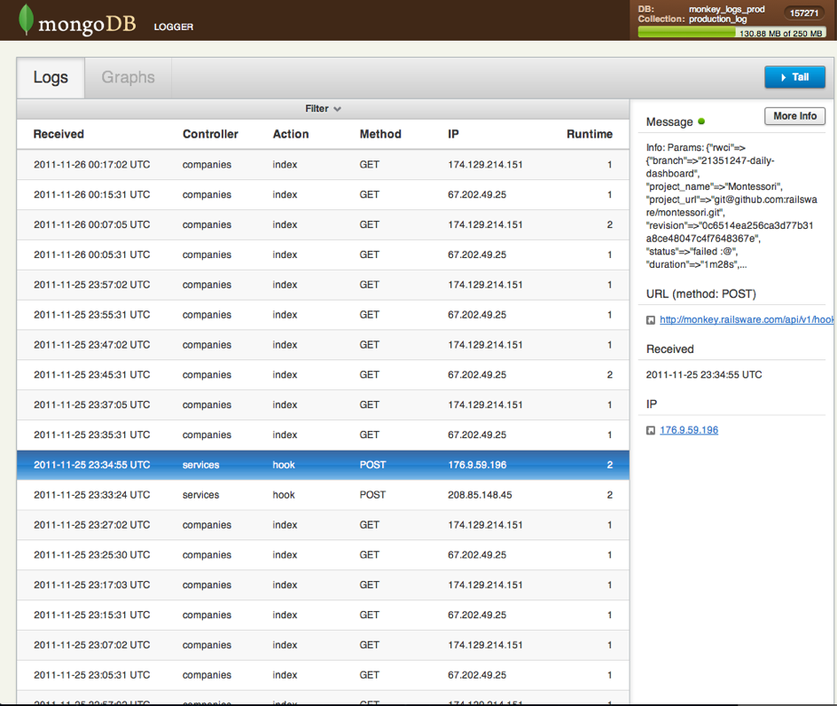

Alexey Vasyliev
Dec 7, 2011
MongoDB is an open source, high-performance, schema-free, document-oriented database. Features:
MongodbLogger is a logger for Rails 3, which log all requests of you application into MongoDB database.
https://github.com/le0pard/mongodb_logger
gem "mongodb_logger"
include MongodbLogger::Base
require 'mongodb_logger/server' mount MongodbLogger::Server.new, :at => "/mongodb"
{
'action' : action_name,
'application_name' : application_name (rails project name),
'controller' : controller_name,
'ip' : ip_address,
'messages' : {
'info' : [ ],
'debug' : [ ],
'error' : [ ],
'warn' : [ ],
'fatal' : [ ]
},
'params' : { },
'path' : path,
'request_time' : date_of_request,
'runtime' : elapsed_execution_time_in_milliseconds,
'url' : full_url,
'method' : request method (GET, POST, OPTIONS),
'is_exception' : true only for exceptions (in other cases this field miss)
}
# make sure we're using the MongodbLogger in this environment if Rails.logger.respond_to?(:add_metadata) Rails.logger.add_metadata(:user_id => @current_user.id) end
>> db = Rails.logger.mongo_connection >> collection = db[Rails.logger.mongo_collection_name]
Find all requests for a specific user (with id):
>> cursor = collection.find(:user_id => '12355') >> cursor.count => 5
Find all requests that took more that one second to complete:
>> collection.find({:runtime => {'$gt' => 1000}}).count
=> 3
Find all requests with an exception that contains "RoutingError":
>> collection.find({"messages.error" => /RoutingError/})
Find all requests with errors:
>> collection.find({"is_exception" => true})
Find all requests by params in request
>> collection.find({"params.activity" => {'$exists' => true}})

Thanks a lot for people: